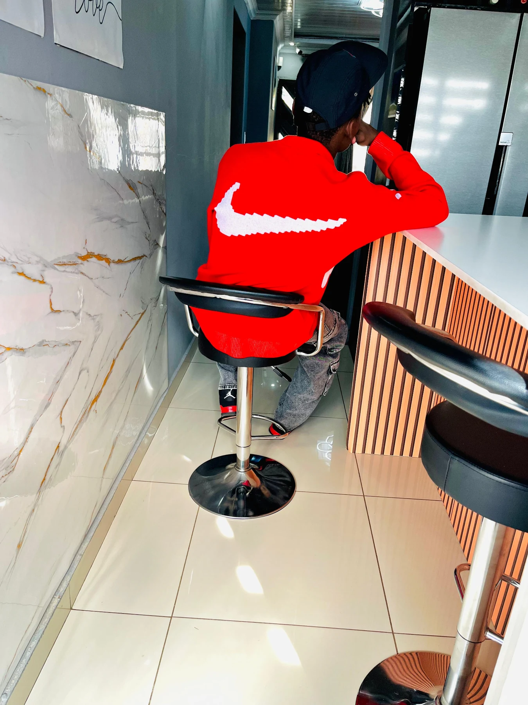

Creator • spirit2k5
About the creator
Carlton Mahlori Tshianeo
I’m Carlton Mahlori Tshianeo, also known as spirit2k5, the creator of Spirit2k5 Web Studio. I build websites, apps and digital projects for people and businesses that want to look professional online.
I created the RONMAXAKS Security Solutions website and I’m also building projects such as FareMap. The goal is simple: build useful things, make them look professional, and keep improving them.
Johannesburg basedWebsite & app builderCreator: spirit2k5
Creator gallery
The person behind spirit2k5
Real photos and video of Carlton Mahlori Tshianeo — creator of Spirit2k5 Web Studio.
